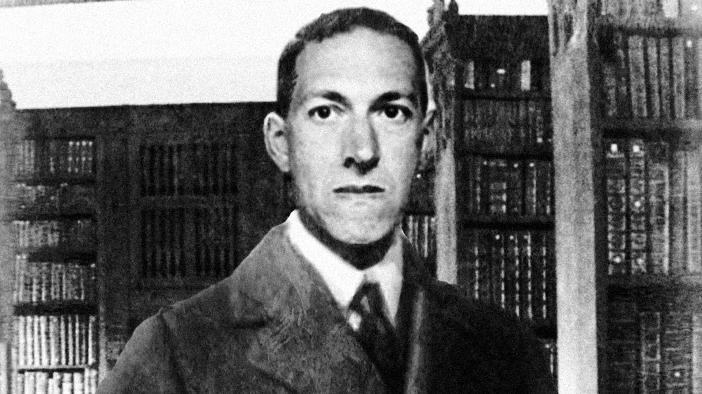

H.P. Lovecraft
A master of horror, widely considered to be one of the greatest authors in the genre.

Notable works by H.P. Lovecraft
- The Alchemist
- At the Mountains of Madness
- Azathoth
- The Call of Cthulhu
- The Case of Charles Dexter Ward
- The Cats of Ulthar
- The Colour out of Space
- Cool Air
- Dagon
- The Doom That Came to Sarnath
- The Dream-Quest of Unknown Kadath
- The Dreams in the Witch House
- The Dunwich Horror
- Facts concerning the Late Arthur Jermyn and His Family
- Herbert West—Reanimator
- History of the Necronomicon
- The Hound
- The Music of Erich Zann
- The Nameless City
- Nyarlathotep
- Pickman's Model
- Polaris
- The Shadow out of Time
- The Shadow over Innsmouth
“That is not dead which can eternal lie, and with strange aeons even death may die."
― Howard Phillips Lovecraft, The Nameless City
Read more about H.P. Lovecraft on Wikipedia.